CODING AGENTS AS PIXEL WORLD MODELS
traex/DeepSeek-V4.1-Flash · 0052
点击播放 · 原生 RGB 像素
逐轮保存的候选
回放视频、检查图与代码变化。
每份候选均可单独播放。实际图片检查记录在下方工具轨迹中。
候选 01播放与检查图
点击播放 · 原生 RGB 像素
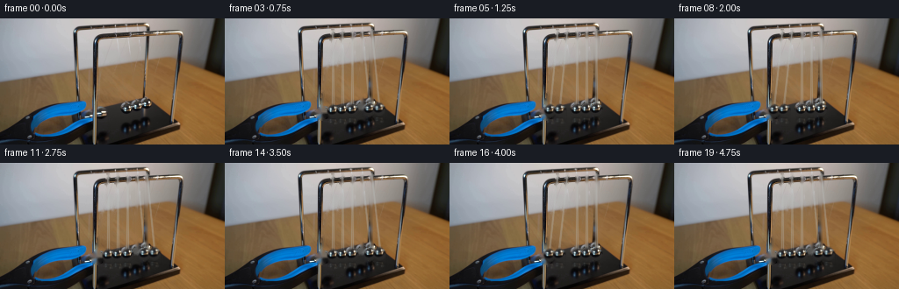
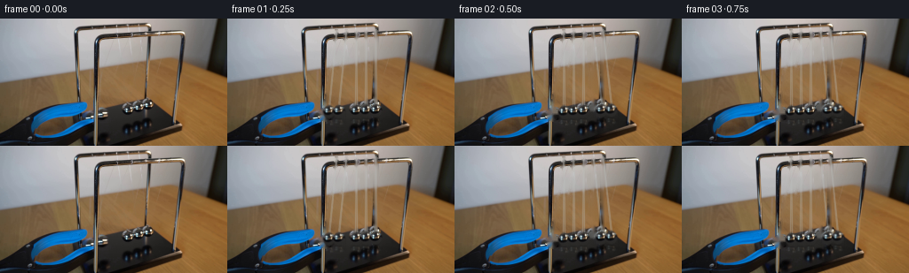
展开代码变化
--- 上一保存版本
+++ 本次保存版本
@@ -0,0 +1,214 @@
+from pathlib import Path
+import math
+
+import cv2
+import numpy as np
+
+import artifact_io
+
+
+ROOT = Path(__file__).resolve().parent
+WIDTH, HEIGHT = 256, 144
+FRAMES, FPS = 20, 4
+
+# Ball pivots follow the perspective of the five suspension points.
+PIVOT_X = np.array([123.0, 134.0, 145.0, 156.0, 167.0])
+EQUILIBRIUM_Y = np.array([105.6, 105.2, 104.8, 104.3, 103.9])
+PIVOT_Y = 8.0
+AMPLITUDE = math.radians(7.5)
+
+# The visible leftmost pair starts at the grabber-held amplitude.
+INITIAL_LEFT_ANGLE = -AMPLITUDE
+RELEASE_TIME = 0.12
+QUARTER_PERIOD = 0.25
+
+
+def _ellipse_mask(shape, center, axes, feather=0.8):
+ mask = np.zeros(shape, np.uint8)
+ center = tuple(int(round(value)) for value in center)
+ axes = tuple(int(round(value)) for value in axes)
+ cv2.ellipse(mask, center, axes, 0, 0, 360, 255, -1, cv2.LINE_AA)
+ if feather > 0:
+ mask = cv2.GaussianBlur(mask, (0, 0), feather)
+ return mask.astype(np.float32) / 255.0
+
+
+def build_plate(source):
+ """Remove the original balls and their initial suspension lines."""
+ mask = np.zeros((HEIGHT, WIDTH), np.uint8)
+
+ ball_centers = [
+ (110, 108),
+ (121, 107),
+ (145, 105),
+ (156, 104),
+ (167, 104),
+ ]
+ for x, y in ball_centers:
+ cv2.ellipse(mask, (x, y), (7, 8), 0, 0, 360, 255, -1)
+
+ initial_angles = [
+ INITIAL_LEFT_ANGLE,
+ INITIAL_LEFT_ANGLE,
+ 0.0,
+ 0.0,
+ 0.0,
+ ]
+ for pivot_x, y_eq, angle in zip(PIVOT_X, EQUILIBRIUM_Y, initial_angles):
+ length = y_eq - PIVOT_Y
+ x = pivot_x + length * math.sin(angle)
+ y = PIVOT_Y + length * math.cos(angle)
+ cv2.line(
+ mask,
+ (int(round(pivot_x)), 13),
+ (int(round(x)), int(round(y - 4))),
+ 255,
+ 2,
+ cv2.LINE_AA,
+ )
+
+ return cv2.inpaint(source, mask, 3, cv2.INPAINT_TELEA)
+
+
+def extract_ball_sprite(source):
+ """Reuse the photographed middle ball as a tiny photographic sprite."""
+ center_x, center_y = 145, 105
+ half_w, half_h = 7, 8
+ x0, x1 = center_x - half_w, center_x + half_w + 1
+ y0, y1 = center_y - half_h, center_y + half_h + 1
+ sprite = source[y0:y1, x0:x1].copy()
+ alpha = _ellipse_mask(
+ sprite.shape[:2],
+ (half_w, half_h),
+ (5.8, 6.7),
+ feather=0.55,
+ )
+ return sprite, alpha
+
+
+def ball_state(time_s):
+ """Return the five pendulum angles for the ideal two-ball transfer."""
+ angles = np.zeros(5, dtype=np.float64)
+ if time_s < RELEASE_TIME:
+ angles[0:2] = INITIAL_LEFT_ANGLE
+ return angles
+
+ segment_float = (time_s - RELEASE_TIME) / QUARTER_PERIOD
+ segment = int(math.floor(segment_float))
+ u = segment_float - segment
+
+ if segment == 0:
+ angles[0:2] = -AMPLITUDE * math.cos(0.5 * math.pi * u)
+ return angles
+
+ pattern = (segment - 1) % 4
+ if pattern == 0: # right pair: centre to right amplitude
+ angles[3:5] = AMPLITUDE * math.sin(0.5 * math.pi * u)
+ elif pattern == 1: # right pair: amplitude back to centre
+ angles[3:5] = AMPLITUDE * math.cos(0.5 * math.pi * u)
+ elif pattern == 2: # left pair: centre to left amplitude
+ angles[0:2] = -AMPLITUDE * math.sin(0.5 * math.pi * u)
+ else: # left pair: left amplitude back to centre
+ angles[0:2] = -AMPLITUDE * math.cos(0.5 * math.pi * u)
+ return angles
+
+
+def _paste_sprite(image, sprite, alpha, center_x, center_y, opacity=1.0):
+ h, w = sprite.shape[:2]
+ transform = np.array(
+ [[1.0, 0.0, center_x - (w - 1) * 0.5],
+ [0.0, 1.0, center_y - (h - 1) * 0.5]],
+ dtype=np.float32,
+ )
+ warped_sprite = cv2.warpAffine(
+ sprite,
+ transform,
+ (WIDTH, HEIGHT),
+ flags=cv2.INTER_LINEAR,
+ borderMode=cv2.BORDER_CONSTANT,
+ )
+ warped_alpha = cv2.warpAffine(
+ alpha,
+ transform,
+ (WIDTH, HEIGHT),
+ flags=cv2.INTER_LINEAR,
+ borderMode=cv2.BORDER_CONSTANT,
+ )
+ warped_alpha *= opacity
+ image[:] = (
+ image.astype(np.float32) * (1.0 - warped_alpha[..., None])
+ + warped_sprite.astype(np.float32) * warped_alpha[..., None]
+ ).clip(0, 255).astype(np.uint8)
+
+
+def render_frame(plate, sprite, sprite_alpha, time_s, source):
+ if time_s == 0.0:
+ return source.copy()
+
+ frame = plate.copy()
+ angles = ball_state(time_s)
+ centers = []
+ for pivot_x, y_eq, angle in zip(PIVOT_X, EQUILIBRIUM_Y, angles):
+ length = y_eq - PIVOT_Y
+ x = pivot_x + length * math.sin(angle)
+ y = PIVOT_Y + length * math.cos(angle)
+ centers.append((x, y))
+
+ # Fine, slightly translucent suspension lines, drawn behind the spheres.
+ strings = frame.copy()
+ for (x, y), pivot_x in zip(centers, PIVOT_X):
+ top_y = 12.0
+ bottom_y = y - 5.5
+ for offset in (-0.55, 0.55):
+ cv2.line(
+ strings,
+ (int(round(pivot_x + offset * 0.5)), int(round(top_y))),
+ (int(round(x + offset)), int(round(bottom_y))),
+ (188, 193, 190),
+ 1,
+ cv2.LINE_AA,
+ )
+ frame = cv2.addWeighted(strings, 0.34, frame, 0.66, 0.0)
+
+ # A very faint reflected image on the glossy black base.
+ for x, y in centers:
+ reflection_alpha = sprite_alpha * 0.10
+ _paste_sprite(
+ frame,
+ cv2.flip(sprite, 0),
+ reflection_alpha,
+ x,
+ y + 9.5,
+ )
+
+ # Left-to-right placement keeps contact highlights consistent.
+ order = np.argsort([center[0] for center in centers])
+ for index in order:
+ x, y = centers[index]
+ _paste_sprite(frame, sprite, sprite_alpha, x, y)
+
+ return frame
+
+
+def main():
+ source = cv2.imread(str(ROOT / "first_frame.png"), cv2.IMREAD_COLOR)
+ if source is None:
+ raise FileNotFoundError("first_frame.png")
+ source = cv2.cvtColor(source, cv2.COLOR_BGR2RGB)
+
+ plate = build_plate(cv2.cvtColor(source, cv2.COLOR_RGB2BGR))
+ plate = cv2.cvtColor(plate, cv2.COLOR_BGR2RGB)
+ sprite_bgr, sprite_alpha = extract_ball_sprite(cv2.cvtColor(source, cv2.COLOR_RGB2BGR))
+ sprite = cv2.cvtColor(sprite_bgr, cv2.COLOR_BGR2RGB)
+
+ frames = []
+ for index in range(FRAMES):
+ time_s = index / FPS
+ frames.append(render_frame(plate, sprite, sprite_alpha, time_s, source))
+ frames = np.stack(frames, axis=0).astype(np.uint8)
+
+ artifact_io.save(frames, ROOT)
+
+
+if __name__ == "__main__":
+ main()
可观测工具轨迹
实际执行的命令与返回图片。
命令 1exit 0
/bin/bash -c "pwd && rg --files -g 'prompt.txt' -g 'GENERATION_RULES.md' -g '"'!*.mp4'"' -g '"'!*.mov'"'"
命令 2exit 0
/bin/bash -c "ls -la && find . -maxdepth 2 -type f -printf '%p %s bytes\\n' | sort"
命令 3exit 0
/bin/bash -c "sed -n '1,220p' GENERATION_RULES.md"
命令 4exit 0
/bin/bash -c "cat prompt.txt && printf '\\n--- artifact_io.py ---\\n' && sed -n '1,260p' artifact_io.py"
命令 5exit 0
/bin/bash -c "find .tmp .agents .codex .aws -maxdepth 3 -type f -printf '%p %s bytes\\n' 2>/dev/null | sort"
命令 6exit 0
/bin/bash -c "which ffmpeg ffprobe python3 node npm chromium chromium-browser google-chrome blender 2>/dev/null; python3 - <<'PY' import importlib.util mods=['cv2','numpy','PIL','imageio','moviepy','torch','diffusers','av','matplotlib'] for m in mods: print(m, bool(importlib.util.find_spec(m))) PY"
命令 7exit 0
/bin/bash -c "python3 - <<'PY'
from PIL import Image
im=Image.open('first_frame.png')
print(im.size, im.mode)
im.resize((1024,576)).save('.tmp/first_x4.png')
PY"命令 8exit 0
/bin/bash -c "python3 - <<'PY'
from PIL import Image, ImageEnhance, ImageFilter
im=Image.open('first_frame.png')
# crops with sharpening/contrast and nearest scale
for name,box in [('left',(70,70,145,125)),('center',(120,70,205,135)),('stand',(75,0,220,70))]:
c=im.crop(box).resize(((box[2]-box[0])*8,(box[3]-box[1])*8),Image.Resampling.LANCZOS)
c=ImageEnhance.Contrast(c).enhance(1.2)
c.save(f'.tmp/{name}.png')
PY"命令 9exit 0
/bin/bash -c "python3 - <<'PY'
import cv2, numpy as np
im=cv2.imread('first_frame.png')
# print edge peaks for ball centers using hough circles various params
for p2 in [10,12,14,16,18,20]:
circles=cv2.HoughCircles(cv2.cvtColor(im,cv2.COLOR_BGR2GRAY),cv2.HOUGH_GRADIENT,dp=1,minDist=5,param1=80,param2=p2,minRadius=3,maxRadius=10)
print('p2',p2, None if circles is None else np.round(circles[0],1).tolist())
PY"命令 10exit 0
/bin/bash -c "python3 - <<'PY'
from PIL import Image, ImageDraw
im=Image.open('first_frame.png').resize((1024,576),Image.Resampling.NEAREST)
d=ImageDraw.Draw(im)
# coordinates grid every 10px source
for x in range(0,256,10):
d.line((x*4,0,x*4,576), fill=(255,0,0) if x%50==0 else (180,30,30), width=1)
if x%20==0: d.text((x*4+2,2),str(x),fill=(255,255,0))
for y in range(0,144,10):
d.line((0,y*4,1024,y*4), fill=(255,0,0) if y%50==0 else (180,30,30), width=1)
if y%20==0: d.text((2,y*4+2),str(y),fill=(255,255,0))
im.save('.tmp/grid.png')
PY"命令 11exit 0
/bin/bash -c "python3 - <<'PY'
from PIL import Image,ImageEnhance,ImageFilter,ImageDraw
im=Image.open('first_frame.png')
# crop all action
box=(75,75,185,130)
c=im.crop(box).resize((1100,550),Image.Resampling.LANCZOS)
c=ImageEnhance.Sharpness(c).enhance(2)
d=ImageDraw.Draw(c)
for x in range(0,111,5):
d.line((x*10,0,x*10,550), fill=(220,50,50), width=1)
if x%10==0:d.text((x*10+2,3),str(box[0]+x),fill=(255,255,0))
for y in range(0,56,5):
d.line((0,y*10,1100,y*10), fill=(220,50,50), width=1)
if y%10==0:d.text((2,y*10+2),str(box[1]+y),fill=(255,255,0))
c.save('.tmp/action_grid.png')
PY"命令 12exit 0
/bin/bash -c "python3 - <<'PY'
from PIL import Image
im=Image.open('first_frame.png')
im.crop((70,0,220,144)).resize((1200,1152),Image.Resampling.LANCZOS).save('.tmp/scene_big.png')
PY"命令 13exit 0
/bin/bash -c "python3 - <<'PY'
from PIL import Image,ImageEnhance
im=Image.open('first_frame.png')
for name,box in [('balls',(105,88,180,115)),('grip',(80,88,130,120)),('base',(105,100,215,145))]:
c=im.crop(box).resize(((box[2]-box[0])*16,(box[3]-box[1])*16),Image.Resampling.NEAREST)
c.save(f'.tmp/{name}_nearest.png')
PY"命令 14exit 0
/bin/bash -c "python3 - <<'PY'
import cv2, numpy as np
im=cv2.imread('first_frame.png')
hsv=cv2.cvtColor(im,cv2.COLOR_BGR2HSV)
# print components for blue
for lo,hi in [((85,80,50),(120,255,255)),((85,40,30),(130,255,255)),((90,60,40),(115,255,255))]:
m=cv2.inRange(hsv,np.array(lo),np.array(hi))
n,l,st,c=cv2.connectedComponentsWithStats(m)
print(lo, sorted(st[1:].tolist(), key=lambda x:-x[4])[:10])
PY"命令 15exit 0
/bin/bash -c "python3 - <<'PY'
import cv2, numpy as np
im=cv2.imread('first_frame.png')
# pixel values around ball centers
for y in [96,98,100,102,104,106,108]:
print(y, [(x, tuple(int(v) for v in im[y,x])) for x in [112,116,120,130,138,146,154,162,170]])
PY"命令 16exit 0
/bin/bash -c "python3 - <<'PY'
import cv2
im=cv2.imread('first_frame.png')
# upscale using cv2 cubic, unsharp mask
for name,box in [('cradle',(95,82,185,125)),('rest',(132,88,180,115)),('leftball',(100,88,128,120))]:
c=im[box[1]:box[3],box[0]:box[2]]
c=cv2.resize(c,None,fx=12,fy=12,interpolation=cv2.INTER_CUBIC)
blur=cv2.GaussianBlur(c,(0,0),1.2)
c=cv2.addWeighted(c,1.7,blur,-0.7,0)
cv2.imwrite(f'.tmp/{name}_sharp.png',c)
PY"命令 17exit 0
/bin/bash -c "python3 - <<'PY'
import cv2, numpy as np
im=cv2.imread('first_frame.png')
g=cv2.cvtColor(im,cv2.COLOR_BGR2GRAY)
# rough ball centers by thresholding bright within action region
for x,y in [(115,102),(124,103),(131,104),(139,104),(147,104),(154,105),(162,105)]:
roi=g[y-5:y+6,x-5:x+6]
print((x,y),roi.max(),roi.mean())
# inspect local maxima
from scipy.ndimage import maximum_filter
print('scipy?')
PY"命令 18exit 0
/bin/bash -c "python3 - <<'PY'
import cv2, numpy as np
im=cv2.imread('first_frame.png')
# kmeans? sample region and use Canny / contours
roi=im[90:115,105:180]
g=cv2.cvtColor(roi,cv2.COLOR_BGR2GRAY)
cv2.imwrite('.tmp/balls_gray.png',cv2.resize(g,None,fx=12,fy=12,interpolation=cv2.INTER_NEAREST))
# ascii grayscale values as chars
chars=' .:-=+*#%@'
for y in range(g.shape[0]):
print(''.join(chars[min(9,int(v)*10//256)] for v in g[y]))
PY"命令 19exit 0
/bin/bash -c "python3 - <<'PY'
from PIL import Image
im=Image.open('first_frame.png')
# color map by coordinate to inspect edges around each ball; create contrast + saturation x8 lanczos
from PIL import ImageEnhance,ImageFilter
c=im.crop((105,90,180,115)).resize((1200,400),Image.Resampling.LANCZOS)
c=ImageEnhance.Contrast(c).enhance(1.8)
c=ImageEnhance.Color(c).enhance(1.8)
c.save('.tmp/balls_contrast.png')
PY"命令 20exit 0
/bin/bash -c "python3 - <<'PY'
import cv2,numpy as np
im=cv2.imread('first_frame.png')
# sample BGR grid action area as compact rgb to identify spheres; threshold bright specular
for y in range(94,111,2):
print(f'y={y:3d}', ' '.join(f'{x}:{im[y,x,1]:3d}' for x in range(108,181,2)))
PY"命令 21exit 0
/bin/bash -c "python3 - <<'PY'
import cv2,numpy as np
im=cv2.imread('first_frame.png')
# compute circles from bright spots, maybe specular centroids
g=cv2.cvtColor(im,cv2.COLOR_BGR2GRAY)
for th in [150,170,190,210,230]:
m=(g>th).astype(np.uint8)*255
m[:,:100]=0;m[:,190:]=0;m[:85]=0;m[118:]=0
n,l,st,c=cv2.connectedComponentsWithStats(m)
print(th,[(tuple(np.round(cc,1)),int(s[4])) for s,cc in zip(st[1:],c[1:]) if s[4]>=2])
PY"命令 22exit 0
/bin/bash -c "python3 - <<'PY'
from PIL import Image
im=Image.open('first_frame.png')
im.crop((128,90,176,114)).resize((1440,720),Image.Resampling.NEAREST).save('.tmp/row_nearest.png')
PY"命令 23exit 0
/bin/bash -c "python3 - <<'PY'
import cv2, numpy as np
im=cv2.imread('first_frame.png')
# enhance local contrast via CLAHE grayscale
roi=im[90:114,128:176]
g=cv2.cvtColor(roi,cv2.COLOR_BGR2GRAY)
cl=cv2.createCLAHE(clipLimit=3.0,tileGridSize=(4,4)).apply(g)
cv2.imwrite('.tmp/row_clahe.png',cv2.resize(cl,None,fx=24,fy=24,interpolation=cv2.INTER_NEAREST))
# print best local bright positions
from scipy.ndimage import maximum_filter
print(np.argwhere((g==maximum_filter(g,size=5)) & (g>100)))
PY"命令 24exit 0
/bin/bash -c "python3 - <<'PY'
import cv2, numpy as np
im=cv2.imread('first_frame.png')
# color channels sample around x 132-174 y 94-107, write CSV-like with x and rgb maxima of bright pixels per column
for x in range(130,176):
p=im[92:110,x,::-1]
# max brightness and coordinates
i=np.argmax(p.mean(axis=1))
print(x, 92+i, tuple(int(v) for v in p[i]), int(p[i].mean()))
PY"命令 25exit 0
/bin/bash -c "python3 - <<'PY'
import cv2,numpy as np
im=cv2.imread('first_frame.png')
# Estimate baseline by mask of dark blue region? use black metal background: median per x over y 94:110
for x in range(132,173):
p=im[96:108,x,::-1]
print(x, tuple(np.median(p,axis=0).astype(int)), 'min',p.min(), 'max',p.max())
PY"命令 26exit 0
/bin/bash -c "python3 - <<'PY'
from PIL import Image
im=Image.open('first_frame.png')
# 1px nearest with labels? horizontal slices
for y in [88,92,96,100,104,108,112,116,120]:
row=im.crop((95,y,190,y+1)).resize((1520,160),Image.Resampling.NEAREST)
row.save(f'.tmp/row{y}.png')
PY"命令 27exit 0
/bin/bash -c "python3 - <<'PY'
from PIL import Image,ImageDraw,ImageEnhance
im=Image.open('first_frame.png').crop((96,84,188,122)).resize((1840,760),Image.Resampling.NEAREST)
d=ImageDraw.Draw(im)
for x in range(0,93):
px=x*20
d.line((px,0,px,760), fill=(255,0,0,80) if x%5==0 else (120,30,30), width=1)
if x%5==0: d.text((px+2,2),str(96+x),fill=(255,255,0))
for y in range(0,39):
py=y*20
d.line((0,py,1840,py), fill=(255,0,0,80) if y%5==0 else (120,30,30), width=1)
if y%5==0: d.text((2,py+2),str(84+y),fill=(255,255,0))
im.save('.tmp/detail_grid_pixel.png')
PY"命令 28exit 0
/bin/bash -c "python3 - <<'PY'
import cv2,numpy as np
im=cv2.imread('first_frame.png')
# save high-res with labels via mpl and custom transform? just create local area upscaled plus labels in margins
from PIL import Image,ImageDraw,ImageFont
box=(95,84,188,122)
c=Image.open('first_frame.png').crop(box).resize((930,380),Image.Resampling.LANCZOS)
c.save('.tmp/detail_lanczos.png')
PY"命令 29exit 0
/bin/bash -c "python3 - <<'PY'
import cv2, numpy as np
im=cv2.imread('first_frame.png')
mask=np.zeros(im.shape[:2],np.uint8)
# held pair + three rest balls
for cx,cy,rx,ry in [(112,106.5,6,7),(123,105.5,6,7),(146.5,105,6,7),(158,104.5,6,7),(169.5,103.5,6,7)]:
cv2.ellipse(mask,(int(round(cx)),int(round(cy))),(rx,ry),0,0,360,255,-1)
# avoid top stand
mask[:97]=0
plate=cv2.inpaint(im,mask,4,cv2.INPAINT_TELEA)
cv2.imwrite('.tmp/plate.png',plate)
cv2.imwrite('.tmp/mask.png',mask)
# compare
cv2.imwrite('.tmp/plate_x4.png',cv2.resize(plate,None,fx=4,fy=4,interpolation=cv2.INTER_NEAREST))
PY"命令 30exit 0
/bin/bash -c "python3 - <<'PY'
import cv2,numpy as np
im=cv2.imread('first_frame.png')
# create region with strong outlines? sample geometry using manual ellipses overlay
for cx,cy,rx,ry in [(112,106.5,6,7),(123,105.5,6,7),(146.5,105,6,7),(158,104.5,6,7),(169.5,103.5,6,7)]:
cv2.ellipse(im,(int(cx),int(cy)),(rx,ry),0,0,360,(0,0,255),1)
cv2.imwrite('.tmp/ellipses.png',cv2.resize(im,None,fx=4,fy=4,interpolation=cv2.INTER_NEAREST))
PY"命令 31exit 0
/bin/bash -c "python3 - <<'PY'
import cv2,numpy as np
im=cv2.imread('first_frame.png')
# sample known static line columns for shadows and compare current circle bounds
# write pixels crop with contrast via LAB clahe
lab=cv2.cvtColor(im,cv2.COLOR_BGR2LAB)
l,a,b=cv2.split(lab)
l=cv2.createCLAHE(clipLimit=2.5,tileGridSize=(8,8)).apply(l)
out=cv2.cvtColor(cv2.merge([l,a,b]),cv2.COLOR_LAB2BGR)
cv2.imwrite('.tmp/clahe_all.png',cv2.resize(out,None,fx=4,fy=4,interpolation=cv2.INTER_CUBIC))
PY"命令 32exit 0
/bin/bash -c "python3 - <<'PY'
from PIL import Image
im=Image.open('first_frame.png')
# split details along columns, magnify cubic
for name,box in [('five',(135,88,177,112)),('one',(103,97,125,118)),('two',(116,96,131,117))]:
im.crop(box).resize(((box[2]-box[0])*30,(box[3]-box[1])*30),Image.Resampling.LANCZOS).save(f'.tmp/{name}_lanc.png')
PY"命令 33exit 1
/bin/bash -c 'python3 generate.py'
命令 34exit 0
/bin/bash -c 'python3 generate.py && ls -lh pixels.npz inspection.png transition_check.png frames/00.png'
命令 35exit 0
/bin/bash -c "python3 - <<'PY'
from PIL import Image
for i in [0,1,2,3,4,5,6,7,8,9,10,11,12,13,14,15,16,17,18,19]:
im=Image.open(f'frames/{i:02d}.png')
im.resize((1024,576),Image.Resampling.NEAREST).save(f'.tmp/f{i:02d}.png')
PY"命令 36exit 0
/bin/bash -c "python3 - <<'PY'
from PIL import Image
im=Image.open('frames/01.png')
im.crop((90,80,190,125)).resize((1600,720),Image.Resampling.NEAREST).save('.tmp/f01_crop.png')
PY"视觉工具实际返回图片 1

视觉工具实际返回图片 2

视觉工具实际返回图片 3
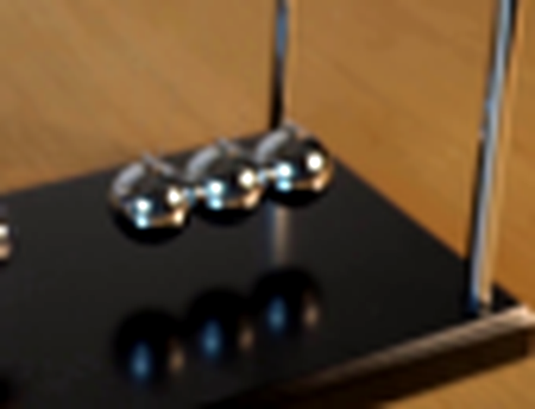
视觉工具实际返回图片 4
视觉工具实际返回图片 5
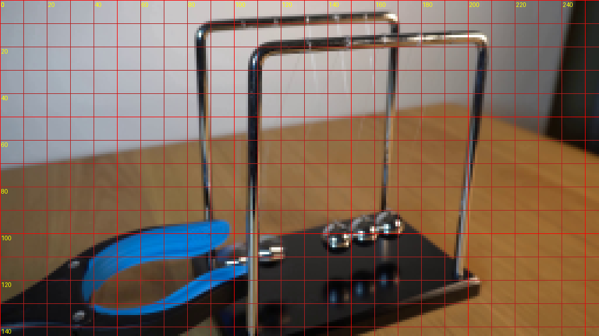
视觉工具实际返回图片 6
视觉工具实际返回图片 7
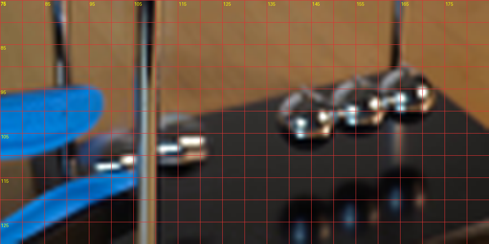
视觉工具实际返回图片 8
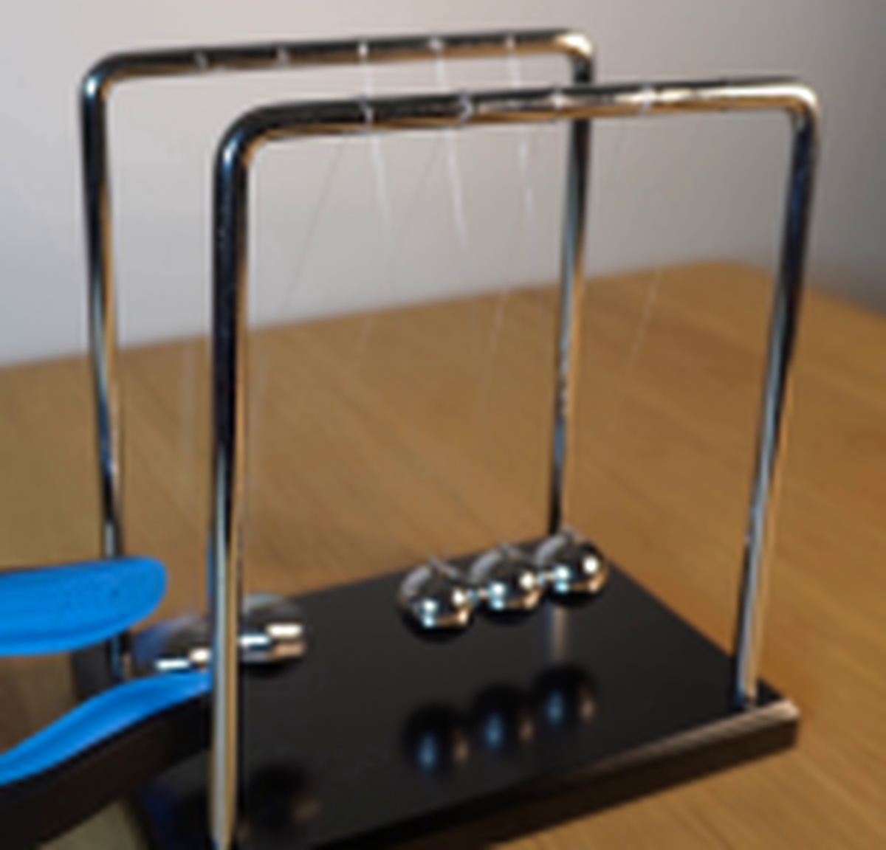
视觉工具实际返回图片 9
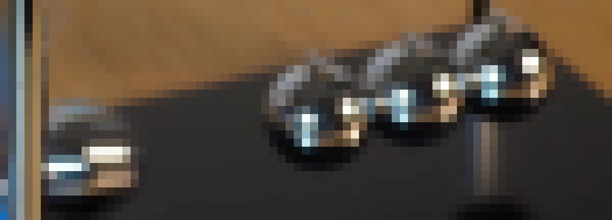
视觉工具实际返回图片 10
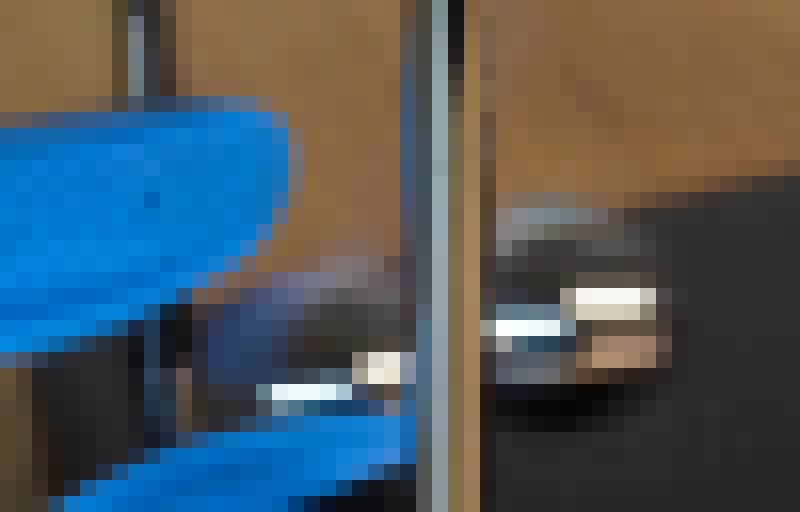
视觉工具实际返回图片 11
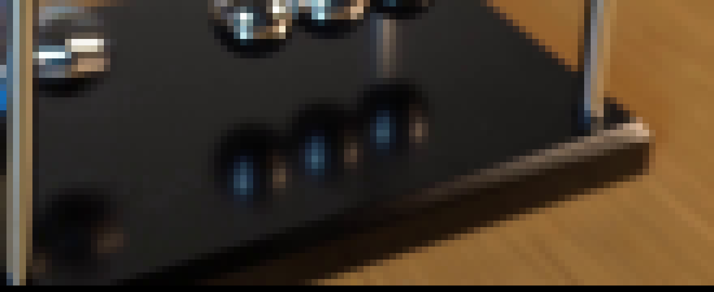
视觉工具实际返回图片 12
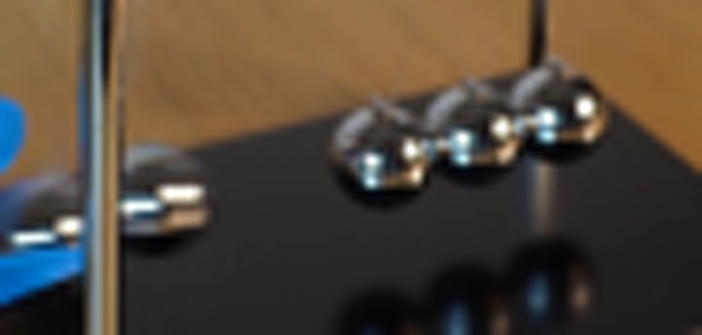
视觉工具实际返回图片 13
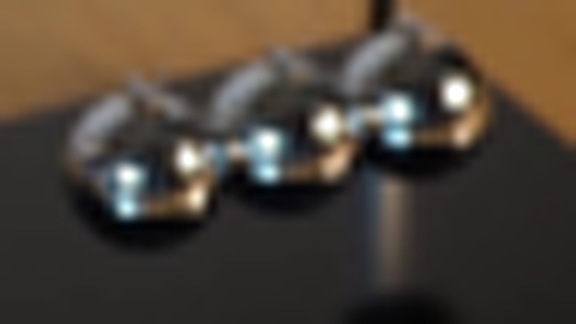
视觉工具实际返回图片 14
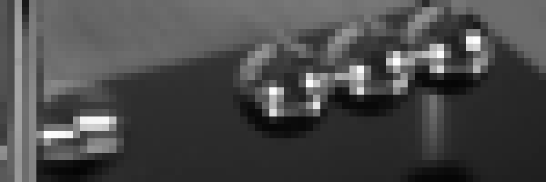
视觉工具实际返回图片 15
视觉工具实际返回图片 16
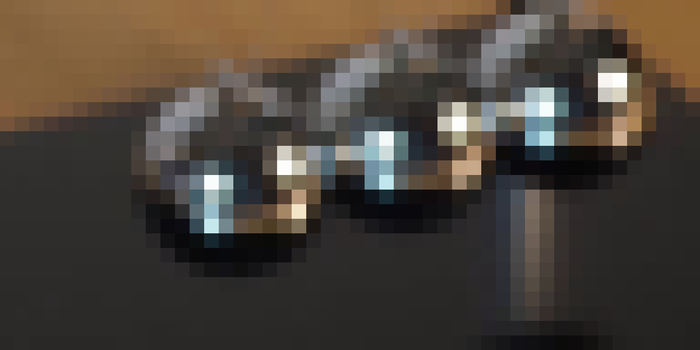
视觉工具实际返回图片 17
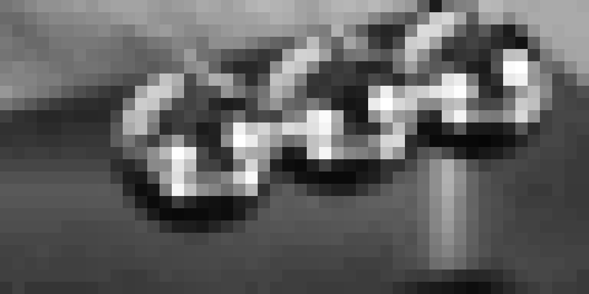
视觉工具实际返回图片 18
视觉工具实际返回图片 19

视觉工具实际返回图片 20
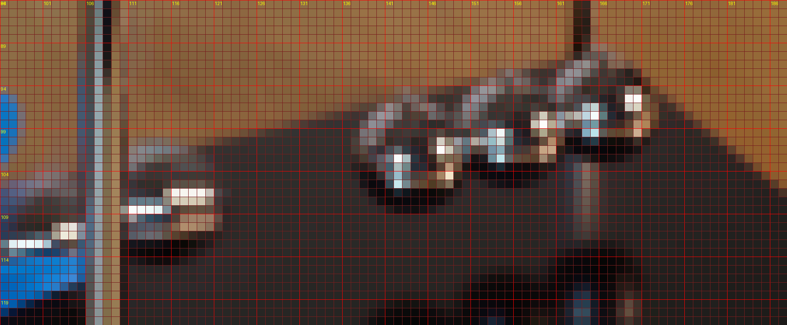
视觉工具实际返回图片 21
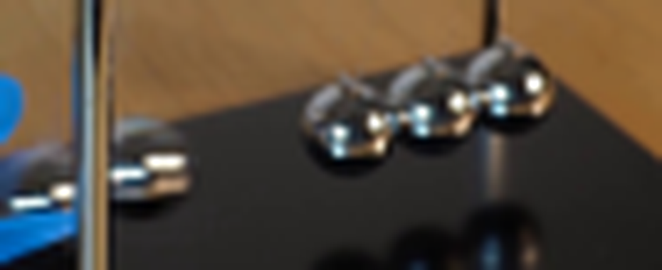
视觉工具实际返回图片 22
视觉工具实际返回图片 23
视觉工具实际返回图片 24
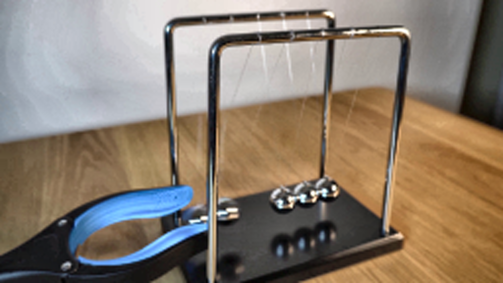
视觉工具实际返回图片 25
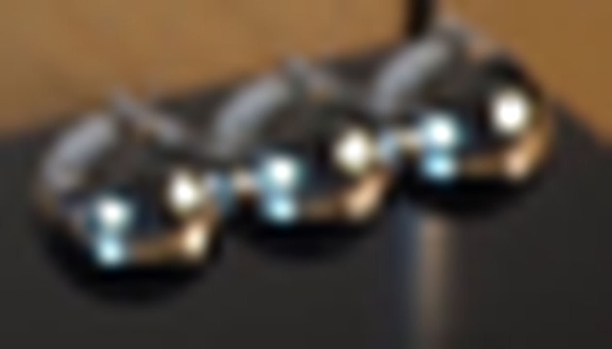
视觉工具实际返回图片 26
视觉工具实际返回图片 27

视觉工具实际返回图片 28
视觉工具实际返回图片 29
视觉工具实际返回图片 30
视觉工具实际返回图片 31
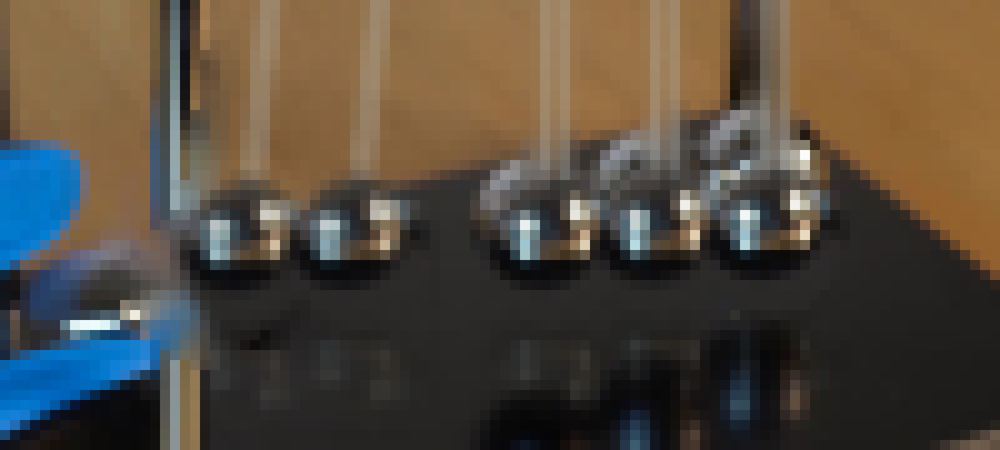
保存候选 1 份；完成命令 36 次；可验证图片返回 31 张。原始 API 响应与完整日志保留在本地。